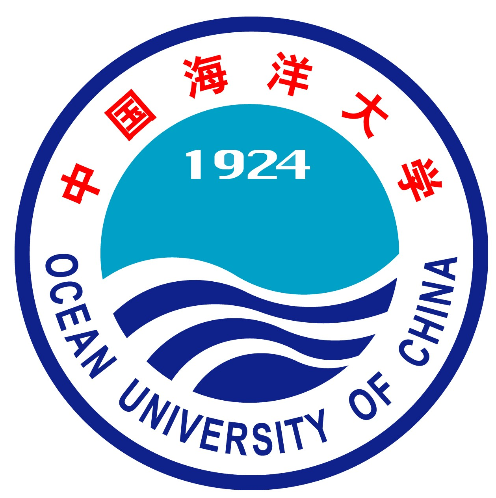
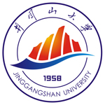
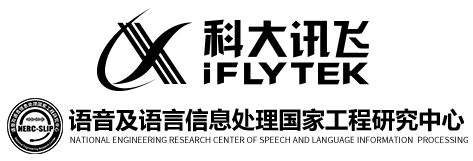

Master student @ Ocean University of China (OUC)
Supervisor: Yanwei Yu.
Research Interest: Spatio-Temporal Data Mining, Information Retrieval, Natural Language Processing, Causal Inference
 edc4001
edc4001
Hefei, China
Education
|  |
Ocean University of China (OUC)
2020.08 - 2023.06 (expected)
M.S. in Department of Information Science and Engineering.
Supervisor: Yanwei Yu.
Research topics: Data Mining / Representation Learning.
|
|
|  |
Jinggangshan University (JGSU)
2016.09 - 2020.06
B.Eng. in School of Computer Science and Technology.
Advisor: Lingyu Sun, Ming Leng.
Member of Key Laboratory of National Geographic Information Administration.
|
Industry Experiences
|
Microsoft Research Asia
2022.09 – Now
Title: Research Intern.
Mentor: Justin Ding.
Research topics: Causal Inference / Explainable AI.
|
||
|  |
iFLYTEK CO.LTD. AI Lab
2022.05 – 2022.09
Title: Research Intern.
Mentor: Zhongyi Ye, Weitai Zhang.
Research topics: Multilingual Machine Translation / Pre-training Model.
|
Research Paper
MCN4Rec: Multi-Level Collaborative Neural Network for Next Location Recommendation
Preprint
The Web Conference, 2023. (WWW'23).
Under Review.
Download:
[PDF]
Trajectory User Linking via Hierarchical Spatio Temporal Attention Networks
Preprint
ACM Transactions on Knowledge Discovery from Data(TKDD), 2022.
Under Review.
Download:
[PDF]
Invited Talks and Presentations
A Prospective Investigation on the Application of Pre-training Model to Machine Translation
Internal invited talk at iFLYTEK htrans, 08/2022.
Download:
[Slides (45 minutes)]
Investigation
Learning to Generalize to More: Continuous Semantic Augmentation for Neural Machine Translation
Internal invited talk at iFLYTEK Academic Week, 07/2022.
Download:
[Poster]
Detailed Explanation of GCN Mathematical Theory
Internal invited talk at SIGMA Group, 06/2022
Download:
[Slides (45 minutes)]
Research Project
| 2022-Now | National Natural Science Foundation of China under grant Nos. 62176243, "Representation Learning for Large-Scale Complex Spatiotemporal Data and Its Applications", ￥739,000, First participant |
| 2020-Now | Graduate Professional Development Fundation of Ocean University of China, "Research and Application of Universal Representation of Large Scale Human Mobile Data Based on Self Supervised Learning", ￥5,000, PI |
Professional Activities
| 2022 | SubReviewer of AAAI, IEEE Transactions on Cybernetics |
| 2021 | SubReviewer of KDD, WWW, AAAI, WSDM, SDM, ACM Transactions on Intelligent Systems and Technology |
| 2020 | SubReviewer of KDD, WWW |
Awards & Honors
| 2022 | National Scholarship |
| 2021 | Outstanding Master Student Award of OUC. |
| 2020 | Outstanding Graduate Student Award of JGSU. |
| 2018 | National Inspirational Scholarship |